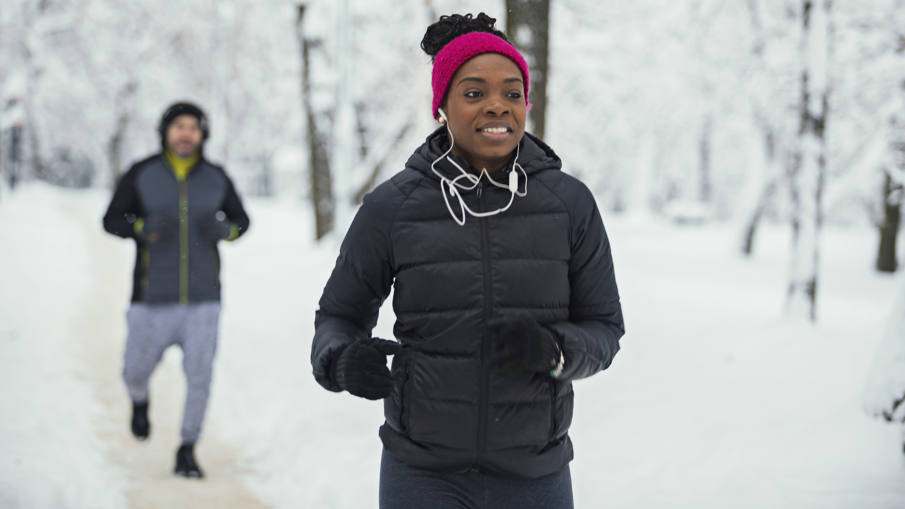
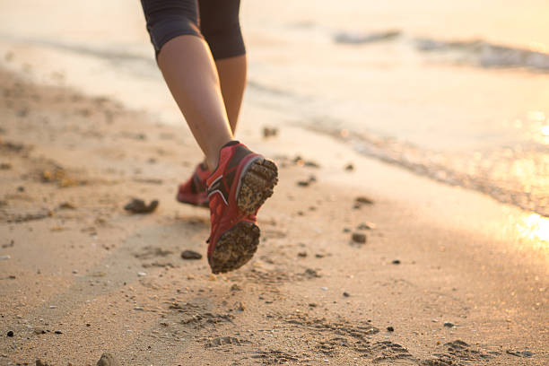
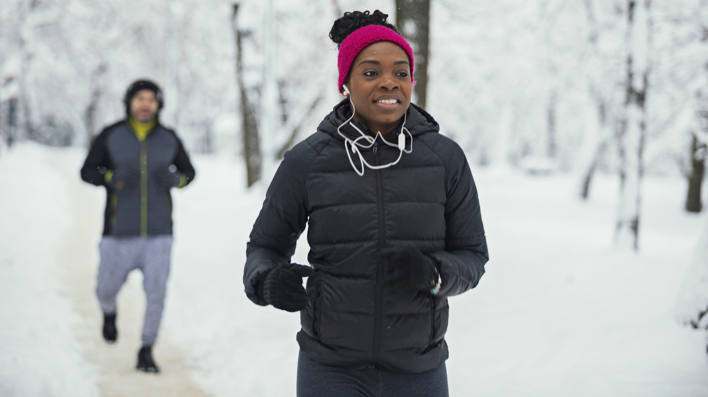
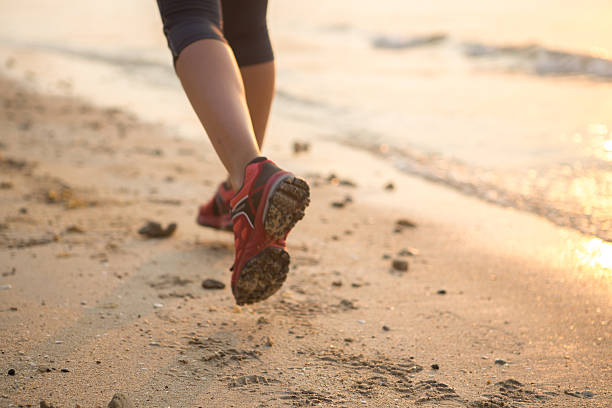

There are many great running shoes! Although running requires limited equipment, shoes are extremely important. Think about the amount of cushioning, support, and weight you want on your shoes- it's often a balancing act. It's important to try your shoes out a little before you buy them- many stores will have an in-house treadmill where you can get in some strides. When you go into the running store, it's a good idea to bring in an old pair of shoes. This can help the sales associates understand how you pronate- how you walk in your shoes, which is great information for a new pair. They will also help you fit into a new pair.
Another great addition to your training gear is a fitness watch. These are not necessary by any means, but are great companions for running, or any workout. They can give you stats like average pace, mileage, cadence, heartrate, and many more. The apple watch is a favorite for many, as it's compatible with many other devices. Although, it's said to be less accurate than its competitor, the Garmin watch. They're both great choices for any athlete, and help keep track during a run.
The most important thing about your running gear is that it's weather appropriate and keeps you safe! Otherwise, running is relatively simple gear-wise. Make sure to bundle up in the winter with many layers, especially with one around your head. A good rule of thumb with gear is to dress as if it's 10-15 degrees warmer than it is- your body heats up quick when running!
 


